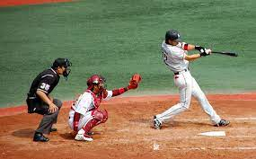

Las Artes Marciales Mixtas (MMA por sus siglas en inglés) son una combinación de distintas artes marciales y deportes de combate como el jiu-jitsu, box, muay thai, taekwondo, judo, lucha, entre otros. A pesar de ser un deporte reciente, desarrollado en los 90, su rápido crecimiento hoy acerca el tamaño de su audiencia a las del box o la cadena WWE.
El boxeo, también llamado a veces boxeo inglés o boxeo irlandés, y coloquialmente conocido como box, es un deporte de contacto en el que dos contrincantes luchan utilizando únicamente sus puños
El Karate es un arte marcial japonés en el que se permiten puñetazos, patadas, golpes de codo y rodilla así como los golpes de mano abierta (o «manos cuchillo»). Puede practicarse como arte (budō), defensa personal o deporte de combate. Cada uno de estos tres ámbitos pone énfasis en aspectos distintos.

Del latín natatio, la natación es la acción y efecto de nadar. El término también se utiliza para dar nombre al deporte que consiste en nadar a la mayor velocidad posible para derrotar a los oponentes en una carrera.

Es un deporte complejo por sus saltos y precisión. Se caracteriza por realizar diferentes ejecuciones en el aire, de una manera elegante y estética. La puntuación de los jueces depende de la impresión, belleza, dificultad y técnica con que los saltos son ejecutados. Los clavados se componen de tres categorías: trampolín de 1 y 3 metros, así como de las plataformas de 5, 7.5 y 10 metros.
Es uno de los deportes o disciplinas consideradas olímpicas que supone el armado de formas artísticas y sincronizadas en un medio acuático. Para realizarla, los participantes (en la mayoría de los casos mujeres) deben poseer habilidades y destrezas en las áreas de la Natación y la Gimnasia, así como también poder moverse de manera sincronizada al ritmo de la Música, lo cual los acerca también al Baile o Danza.

Deporte que se practica entre dos equipos de once jugadores que tratan de introducir un balón en la portería del contrario impulsándolo con los pies, la cabeza o cualquier parte del cuerpo excepto las manos y los brazos; en cada equipo hay un portero, que puede tocar el balón con las manos, aunque solamente dentro del área; vence el equipo que logra más goles durante los 90 minutos que dura el encuentro.

Se conoce como basquetbol, básquetbol, baloncesto o básquet a un deporte de competición por equipos, cuyo objetivo es insertar el balón con las manos en un cesto elevado. Gana quien haga más anotaciones o "canastas" en el aro del equipo contrario.
Deporte que se practica entre dos equipos de seis jugadores en una cancha rectangular dividida transversalmente por una red situada a 2,43 m de altura; el objetivo es golpear el balón con manos o brazos para pasarlo por encima de la red, evitando que la pelota bote en el campo propio; los partidos constan de tres mangas de 15 puntos cada una.
El béisbol, también llamado baseball o pelota base, es un deporte de equipo jugado entre dos equipos de nueve jugadores cada uno. El equipo que anote más carreras al cabo de los nueve (9) episodios, llamados innings (o entradas) que dura el encuentro, es el que resulta ganador.
Balonmano es el nombre de un deporte que también se conoce como hándbol o handball. En este juego, dos equipos de siete integrantes cada uno se enfrentan entre sí: el conjunto ganador es aquel que logra anotar más goles.
Deporte que se practica entre dos equipos de once jugadores que tratan de llevar un balón amelonado más allá de una línea de meta del equipo contrario; para jugar el balón se utilizan las manos y los pies y para impedir el ataque se puede cargar y derribar al jugador que lleva el balón; vence el equipo que consigue más puntos en los 60 minutos que dura el encuentro, divididos en cuatro partes iguales.
000-918-9187-912
MONTERREY
SAN NICOLAS
ESCOBEDO
HABLAR CON UN OPERADOR
QUEJAS